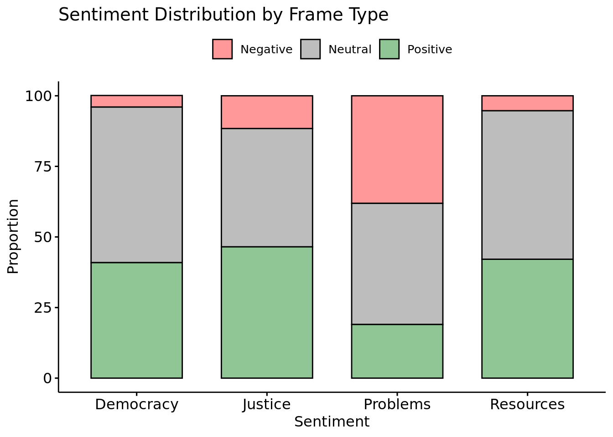

Sentiment Analysis of Participatory Budgeting Tweets
This section demonstrates how to perform sentiment analysis on Twitter data about Participatory Budgeting (PB). We’ll analyze tweets to understand how different social actors discuss PB and the emotional content of their messages.
We use R, Quarto, and the tidytext framework to score the sentiment of tweets with the AFINN lexicon. Then we explore the results with descriptive tables and basic charts.
The dataset covers tweets posted by a range of social actors (citizens, politicians, government agencies, etc.) and includes various grouping variable such as:
account_value: Whether the Twitter account is run by an Individual or an Organisation.
actor_value: The social actor type (e.g., Citizen, Administration, Media, etc.).
frame_value: How the tweet frames participatory budgeting (e.g. in terms of Democracy, Justice, Resources or Problems).
A short codebook with more details on the data structure is in the Annex of this webpage.
R Script
All the steps for reading and cleaning the data, tokenizing text, and computing sentiment scores with the AFINN lexicon are included in an R script stored in the R folder of this project. This means you can run all those steps in your own Rstudio project (filename is R/afinn_sentiment_analysis.R) or with your own data by addapting the R scripts accordingly.
We will also compare traditional sentiment analysis using a dictionary approach (e.g. AFINN) with a Large Language Model (LLM) approach. To replicate the LLM approach covered in the class session, there is also an R script for running an LLM model on the Rstudio server, which can also be found in the project Repo (the path on the project repo is R/mall_sentiment_classification.R).
For replicating the AFINN approach, after running the script, a CSV file named tw_sentiment_afinn.csv should appear in your data/ folder. Make sure you have a folder called data in your project directory. The csv contains the original tweet data plus three extra columns:
tweet_id: A simple numeric ID for each tweet.
sentiment_score: The numeric AFINN sentiment score per tweet (sum of word-level scores).
sentiment_category: A label of “Positive”, “Negative”, or “Neutral” based on sentiment_score.
The R script can also be accessed in the Annex of this document.
Loading libraries and Examining the Data
First, let’s load libraries and the preprocessed dataset that contains sentiment scores:
Code
library(tidyverse)library(kableExtra) # for tableslibrary(reactable) # for interactive tableslibrary(ggpubr) # for graphslibrary(here) # for directory pathslibrary(rstatix)# Read the final sentiment-scored datadf_tw <-read_csv(here("data/tw_sentiment_afinn.csv"))# Check the first few rows, and render as an html tablehead(df_tw, 5) %>%kbl()
id
description
text
account_value
actor_value
frame_value
tweet_id
sentiment_score
sentiment_category
id_760540204050419712
Director of Research at @PublicAgenda. Opinions are my own, obviously. Allegedly, I'm funny on Instagram. He/him.
.@PublicAgenda found women were well-represented in #participatorybudgeting processes https://t.co/vjWMCUhbqU
Individual
Citizen
Justice
1
0
Neutral
id_587692331777843200
OSH was the site of the largest battle of the Revolutionary War and the home of the Brooklyn Dodgers. Join us for educational and cultural events year-round!
Pop up participatory budgeting voting today @OSHBklyn @bradlander! 2:30-4:30 pm Monday April 13. Bring your voice to the process!
Organisation
Edu
Democracy
2
0
Neutral
id_1302915724197998592
International Observatory on Participatory Democracy: @uclg_org's consultation mechanism on Participatory Local Democracy #CitiesAreListening #DemoPart
üèôÔ∏èüåè LRGs are at the forefront of #ClimateAction and #ParticipatoryDemocracy ‚ú® "Contributions of Participatory Budgeting to Climate Change Adaptation and Mitigation", by Yves Cabannes (@dpu_ucl) The study is now OUT: üîó https://t.co/kqiYKBHh7F #local4action https://t.co/y7qxMrNhIO
Organisation
Civil
Democracy
3
0
Neutral
id_620635276860370944
mecanikal engnering
Participatory budgeting in Local Authorities and Central Government a must! - Residents in Harare urge the City...
Individual
Citizen
Democracy
4
0
Neutral
id_1362857537553510403
Researcher, entrepreneur, candidate in municipal elections in Lappeenranta.
City of #Lappeenranta conducts a pilot of participatory budgeting. Submit your ideas on how to spend the allocated 20k EUR and vote for the best idea. https://t.co/ABQH6NikUA
Individual
Citizen
Democracy
5
0
Neutral
Data Exploration
Below we provide some very basic descriptives of the sentiment annotated Tweet dataset.
Sentiment Overall
This table and graph below shows the overall distribution of sentiment for the twitter dataset.
Code
# Create a summary table of overall sentiment, and give useful columns headingsoverall_sentiment <- df_tw %>%freq_table(sentiment_category) %>%rename(`Sentiment`="sentiment_category",`Proportion`="prop",`Count`="n" )# Create table overall_sentiment %>%kbl()
# Note the legend is actually unnecesary, labels are already included in the x axis
Sentiment by Account Type
This table allows you to explore how sentiment varies across different types of Twitter accounts (it doesn’t!)
Code
# Create a summary table of account type, and give useful columns headingsaccount_sentiment <- df_tw %>%freq_table(account_value, sentiment_category) %>%rename(`Account Type`="account_value",`Sentiment`="sentiment_category",`Proportion`="prop",`Count`="n" )# Create table account_sentiment %>%kbl()
Account Type
Sentiment
Count
Proportion
Individual
Negative
21
6.7
Individual
Neutral
171
54.5
Individual
Positive
122
38.9
Organisation
Negative
17
5.0
Organisation
Neutral
179
52.6
Organisation
Positive
144
42.4
Code
ggbarplot(data = account_sentiment,x ="Account Type",y ="Proportion",fill ="Sentiment",title ="Sentiment Distribution by Account Type",xlab ="Sentiment",ylab ="Count")
Sentiment by Actor Type
The table and graph allows you to explore how sentiment varies across different types of social actors.
Code
# Create a summary table of account type, and give useful columns headingsactor_sentiment <- df_tw %>%freq_table(actor_value, sentiment_category) %>%rename(`Actor Type`="actor_value",`Sentiment`="sentiment_category",`Proportion`="prop",`Count`="n" )# Create table # We will group the table in this case, and just look at proportionsactor_sentiment %>%select(-Count) %>%# remove the Count columnsspread(Sentiment,Proportion) %>%kbl()
Actor Type
Negative
Neutral
Positive
Citizen
5.5
57.7
36.8
Civil
6.6
50.0
43.4
Edu
NA
51.4
48.6
Media
6.3
64.6
29.1
Political
6.3
46.5
47.2
Code
ggbarplot(data = actor_sentiment,x ="Actor Type",y ="Proportion",fill ="Sentiment",title ="Sentiment Distribution by Account Type",xlab ="Sentiment",ylab ="Count")
Sentiment by Frame Type
The table and graph allows you to explore how sentiment varies across different types of frames.
Code
# Create a summary table of account type, and give useful columns headingsframe_sentiment <- df_tw %>%freq_table(frame_value, sentiment_category) %>%rename(`Frame Type`="frame_value",`Sentiment`="sentiment_category",`Proportion`="prop",`Count`="n" )# Create table # We will group the table in this case, and just look at proportionsframe_sentiment %>%select(-Count) %>%# remove the Count columnsspread(Sentiment,Proportion) %>%kbl()
Frame Type
Negative
Neutral
Positive
Democracy
4.1
55.1
40.9
Justice
11.6
41.9
46.5
Problems
38.1
42.9
19.0
Resources
5.3
52.6
42.1
Code
# Change colours and remove legend titleggbarplot(data = frame_sentiment,x ="Frame Type",y ="Proportion",fill ="Sentiment",palette =c("#FF9999", "#BDBDBD", "#90C695"), # Specify custom colorstitle ="Sentiment Distribution by Frame Type",xlab ="Sentiment",ylab ="Proportion") +theme(legend.title =element_blank() # Remove legend title )

Drill into the Sentiment and Frames
A reactable example
We can use the reactable package to create more interactive tables. It allows for data grouping and the visualisation of more detailed information.
Comparison with an LLM approach to sentiment annotation
Here we include the results of an LLM approach to annotating the tweets related to PB. The Meta open-source model, LLaMA 3.1, model was used to classify the tweets for their sentiment. The code can be seen in the R scripts.
Code
# Load dataframestw <-read_csv(here("data/tw.csv"))tw_sentiment_afinn <-read_csv(here("data/tw_sentiment_afinn.csv"))tw_sentiment_llama <-read_csv(here("data/tw_sentiment_llama.csv")) # Harmonise categoriestw_sentiment_llama$llama_sentiment <-str_to_title(tw_sentiment_llama$llama_sentiment)# First, let's join both sentiment variables to the base dataframetw_combined <- tw %>%left_join( tw_sentiment_llama %>%select(id, llama_sentiment),by ="id" ) %>%left_join( tw_sentiment_afinn %>%select(id, sentiment_category),by ="id" )# Create binary variable comparing the two sentiment analysestw_combined <- tw_combined %>%mutate(sentiment_match =case_when( llama_sentiment == sentiment_category ~"Match", llama_sentiment != sentiment_category ~"Mismatch",is.na(llama_sentiment) |is.na(sentiment_category) ~"Missing",TRUE~"Other" ) )
The tables below compare the results of the 2 different approaches to sentiment analysis (AFINN vs LLaMA).
Comparison tables
Code
# Check the resultstw_combined %>%count(sentiment_match) %>%kbl(caption="Mismatches Overall (count)")
Mismatches Overall (count)
sentiment_match
n
Match
320
Mismatch
334
Code
tw_combined %>%freq_table(frame_value,sentiment_match) %>%select(-prop) %>%spread(sentiment_match,n) %>%kbl(caption="Mismatches by Frame (count)")
Mismatches by Frame (count)
frame_value
Match
Mismatch
Democracy
249
265
Justice
21
22
Problems
10
11
Resources
40
36
Code
tw_combined %>%freq_table(frame_value,sentiment_match) %>%select(-n) %>%spread(sentiment_match,prop) %>%kbl(caption="Mismatches by Frame (percentaes)")
Mismatches by Frame (percentaes)
frame_value
Match
Mismatch
Democracy
48.4
51.6
Justice
48.8
51.2
Problems
47.6
52.4
Resources
52.6
47.4
AFFIN vs LLaMA: A reactable for exploring mismatches
In the table below we can drill into the annotated dataset to see the mismatching between the two different sentiment approaches.
The following R scripts can also be found in the digipols-admin project Repo, in the R folder.
Traditional sentiment analysis
Code
######################################################################### 1. Load Required Packages######################################################################### Uncomment to install packages if needed:# install.packages(c("tidyverse", "tidytext", "kableExtra"))library(tidyverse)library(tidytext)library(kableExtra)library(here) # for easy directory paths, defines your root directory ######################################################################### 2. Example Dataset of Participatory Budgeting (mostly campaigns)########################################################################df <-read_csv(here("data/tw.csv")) # load data with here()# df <- read_csv("data/tw.csv") # use this code if you prefer without here()######################################################################### 3. View Data Using kableExtra########################################################################df %>%head(5) %>%kable() %>%kable_styling(full_width =FALSE, bootstrap_options =c("striped", "hover"))######################################################################### 4. Tokenize and Clean Text######################################################################### 4.1. Tokenizationdf_tokens <- df %>%mutate(tweet_id =row_number()) %>%# Create a simple ID for each tweetunnest_tokens(word, text) # Break tweets into individual words# 4.2. Remove Stop Wordsdata("stop_words") # Provided by tidytextdf_tokens_clean <- df_tokens %>%anti_join(stop_words, by ="word")######################################################################### 5. Perform Sentiment Analysis Using AFINN######################################################################### The AFINN lexicon assigns an integer score to each word (range: -5 to 5).afinn <-get_sentiments("afinn")# 5.1 Join tokenized tweets with AFINN to get word-level scoresdf_afinn <- df_tokens_clean %>%inner_join(afinn, by ="word")# 5.2 Summarize the sentiment score for each tweettweet_scores <- df_afinn %>%group_by(tweet_id) %>%summarise(sentiment_score =sum(value), .groups ="drop")# 5.3 Merge scores back with the original tweets if you wantdf_scored <- df %>%mutate(tweet_id =row_number()) %>%left_join(tweet_scores, by ="tweet_id") %>%# Replace NA scores with 0 for tweets that had no matched wordsmutate(sentiment_score =if_else(is.na(sentiment_score), 0, sentiment_score))######################################################################### 6. Convert Numeric Scores to Positive, Neutral, Negative######################################################################### Define categories based on the numeric AFINN score:df_scored <- df_scored %>%mutate(sentiment_category =case_when( sentiment_score >0~"Positive", sentiment_score <0~"Negative",TRUE~"Neutral"# Covers sentiment_score == 0 ) )######################################################################### 7. Save sentiment dataframe########################################################################df_scored %>%write_csv("data/tw_sentiment_afinn.csv")
Sentiment analysis using an LLM
Here we use an open source LLM -specifically Meta’s LLaMA open source model. Running these models locally require some extra packages and some caution with the amount of data passed to the models. The scripts perform sentiment analysis and text classification.
Code
# Load required librarieslibrary(tidyverse)library(ollamar)library(ellmer)library(mall)# Load dataframetw <-read_csv("data/tw.csv")# Load LLMollamar::test_connection() # test connectionlist_models() # get a list of locally installed modelsollamar::pull('llama3.1:latest') # pull a model### Define Meta's llamallm_use(backend ="ollama",model ="llama3.1:latest",.silent =TRUE,seed =123,temperature =0)# Perform sentiment analysistw_sentiment_llama <- tw |>llm_sentiment(col = text,pred_name ="llama_sentiment")# Save dataframetw_sentiment_llama %>%write_csv("data/tw_sentiment_llama.csv")# Perform a classification analysis# Technically, this is similar to one-shot classification. Define some frames.frame_values <-c("justice","democracy","finances or resources","problems")# Perform classification analysis# The results are not good, which point to limitations in the# classification functiontw_classification_llama <- tw |>llm_classify(col = text,labels = frame_values,pred_name ="llama_classification")# Save dataframetw_classification_llama %>%write_csv("data/tw_classification_llama.csv")
Annex: 2 More information on the Tweet data
The dataset can be found in the project repo, or in the folder that was shared with your google drive at the start of the course.
This codebook describes the variables in the dataset
What type of Twitter user account?
[variable = account_value] This question asks coders to consider whether the Twitter account belongs to an “Individual” or to an “Organisation”. Although Twitter accounts are created by individuals, many accounts can belong to an organisation.
Individual
Organisation
What type of social actor created the tweet?
[variable = actor_value] This question asks coders to consider the type of social actor that created the tweet. To help choose the most appropriate category, it is advised to visit the author’s Twitter account.
Citizen
Political (Politician; Political Party)
Administration (Official; Local authority / Government agency)
Media (Journalist/Blogger; News Organisation)
Civil Society (Interest group / NGO; Campaign group)
Education (Academic; School)
Other
Not applicable
Which “frame” best describes the tweet?
[variable = frame_value] People who tweet about “participatory budgeting” (PB) present it in many different ways. They do this by emphasising (or neglecting to emphasise) particular aspects of PB. The way in which PB is “presented” and the impression it leaves on the reader of the tweet is referred to as “framing”. This question asks coders to consider how the topic of PB is “framed” in the tweet.
A tweet may contain an explicit frame. For instance, it may refer to PB in a positive way by emphasising citizen participation or by suggesting it is a fairer way to distribute a city budget. A tweet might also present PB in a negative way by explicitly pointing out that it is an inefficient way to allocate public funds or that it is subject to corruption.
A tweet may contain a frame even if that frame is not explicitly stated. Perhaps a tweet never explicitly states that, “PB is a fair way to distribute public goods” but if the tweet focuses on how PB funds are allocated then this is the kind of message transmitted to the reader.
Below we list the 7 of the most common frames we have identified related to PB. Each frame includes a short description and some examples of tweeets. We also include two extra answer options: “No frame”, where the tweet does not contain any identifiable frame, and “Other frame” for cases where the tweet’s frame does not fit any of the 7 predetermined categories.
Democratic solution
Political Empowerment
Improving accountability / transparency
Promote social justice
Resources / spending priorities
PB implementation problems
Negative aspects of PB Other frame No Frame
In practice, the various frames were grouped together into simpler categories in the dataset Democracy (frames 1, 2, and 3) Justice (frame 4) Resources (frame 5) Problems (frames 6 and 7)